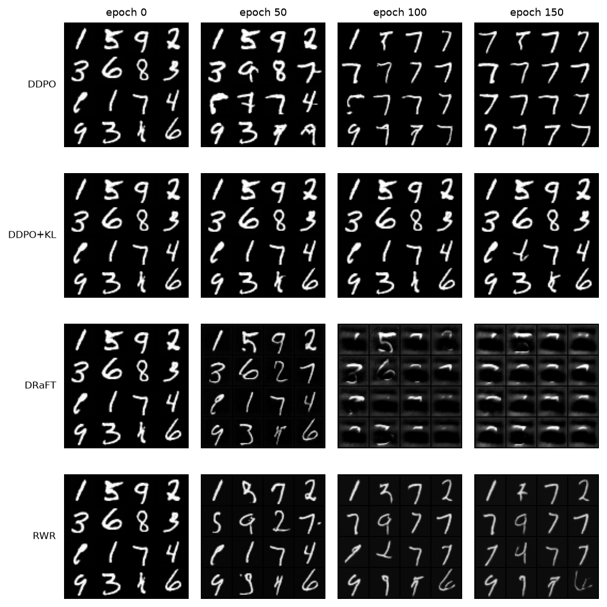
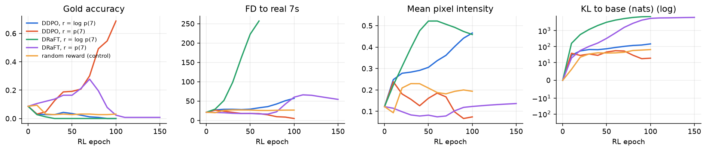
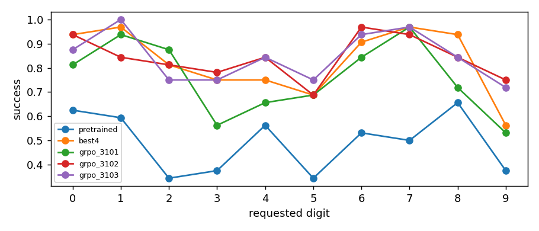
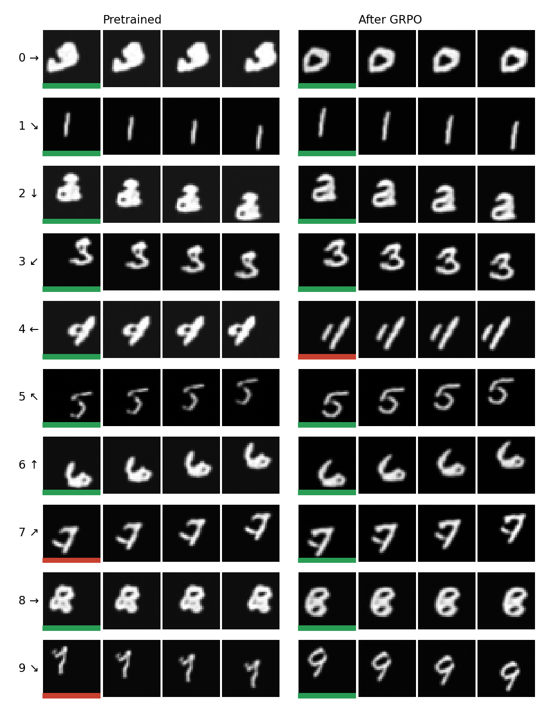

Research note · reinforcement learning for diffusion models
RL for diffusion models: what works, and what gets hacked
DDPO, RWR, DRaFT, best-of-N and GRPO on MNIST, video, RFdiffusion3 and CIFAR-10. One 16 GB laptop. Every result scored by an evaluator the reward never saw.
DDPO on a weak reward
96%
real 7s by the gold model
MNIST · 3 seeds, ±1%
MNIST · 3 seeds, ±1%
DRaFT on the same reward
0.7%
real 7s by the gold model
proxy score 0.99 · reward hacked
proxy score 0.99 · reward hacked
GRPO on video
+32.4
points of success, 49% → 82%
3 seeds, 95% CI +27.7 to +37.3
3 seeds, 95% CI +27.7 to +37.3
TL;DR
- Learn from your own samples. DDPO, RWR, GRPO, best-of-N stay honest. DRaFT attacks the reward model.
- Pay for exactly the target. Any shortcut in the reward gets found.
- RL needs headroom. RFdiffusion3 already satisfied the reward, so nothing moved.
- The reward model is the ceiling. CIFAR-10: reward +0.056, independent judge +0.009.
- Best-of-N is the baseline to beat. Best-of-64: 99% real 7s at 3.2 nats KL.

Denoising as an RL problem
A stochastic DDIM sampler (η = 1) is a chain of Gaussian steps, so each step is a policy action:
π_θ(x_t' | x_t) = N( μ_θ(x_t, t), σ_t² I )
state = (x_t, t) action = x_t' reward = r(x̂₀) at the end
- Per-step log-probs are exact and cheap, even though the image likelihood isn't.
- Policy and reference share σ_t, so per-step KL is closed form.
GRPO: sample a group per prompt, normalise rewards within the group, take clipped steps, anchor with KL:
A_i = (r_i − mean(r_group)) / std(r_group)
L = − E[ min(ρ·A, clip(ρ, 1±ε)·A) ] + β·KL(π_θ ‖ π_ref)
Part 1
Which algorithm can you trust?
Goal: turn an unconditional MNIST generator into a 7 generator, using only a weak reward model. A strong model we never train on tells us the truth.
- Base
- 1.5M-param UNet DDPM. ~9% of samples are 7s.
- Proxy reward
- MLP on 1,000 labels (89.9%). r = p(7|x).
- Gold judge
- CNN on 60k labels (99.2%). Never trained on.
- Black-box
- JPEG file size (no gradient).
Same reward, opposite outcomes

| Method (150 epochs) | proxy p(7) | gold acc | FD → 7s ↓ | diversity | path-KL |
|---|---|---|---|---|---|
| Pretrained base | 0.081 | 0.086 | 20.85 | 5.71 | 0 |
| DDPO, 3 seeds | 0.914 ± .022 | 0.958 ± .010 | 0.96 | 1.85 | 76 ± 64 |
| DDPO, 3 passes / batch (75 ep) | 0.983 | 1.000 | 1.78 | 1.10 | 76 |
| DDPO + KL β = 3e-4 | 0.460 | 0.488 | 8.93 | 4.49 | 7 |
| RWR | 0.336 | 0.316 | 32.26 | 3.93 | 697 |
| DRaFT-1, 3 seeds | 0.988 ± .003 | 0.007 ± .002 | 49.7 | 1.81 | 6,500 |
| Oracle: DDPO on gold | 0.825 | 0.914 | 1.62 | 2.31 | 68 |
| Best-of-16 (no training) | 0.739 | 0.749 | – | – | 1.8 exact |
| Best-of-64 (no training) | 0.962 | 0.989 | – | – | 3.2 exact |


Why
- DDPO only reweights images the model already makes. On those, the proxy is roughly right.
- DRaFT follows ∇ₓr, which for an MLP is an adversarial direction. It's an adversarial attack baked into the weights.
- Control: DRaFT on the strong gold CNN gives mostly real 7s, but still ghost overlays and 3,560 nats of KL. Robust rewards help; they don't make it safe.
Reward shaping comes first
- r = log p → 0% real 7s. r = p → 96%. Same optimum, different path.
- Cause: with 9% 7s per batch, most log p variance comes from non-7s, where "more ink" scores slightly higher.
- Bounded p scores non-7s ≈ 0, so the gradient comes from the 7s.

The price of staying close

- Best-of-64: 99% gold at 3.2 nats exact KL. RL: same accuracy at 20–165 nats path-KL.
- If inference is cheap, best-of-N is hard to beat. RL's win: 64× cheaper sampling.
Sample reuse

- Per-pixel log-prob averaging shrinks |ρ − 1| to ~2e-4.
- So the ε = 0.2 clip never fires, even after 6 passes.
- The gain is just extra gradient steps. Explains DDPO's ε = 1e-4.
Black-box rewards
- Incompressibility (+30% file size): thick, rough strokes.
- Compressibility: digits fade to solid black. Reward satisfied, output useless.

Gotchas
- The last step dominates. σ ≈ 0.006 → 100× larger score term. End the stochastic chain early.
- Run a null-reward control. Random advantages still drift 65 nats.
- Keep x̂₀ clipping. Removing it: FD 1.3 → 149.
- Learning rate controls hacking. 3e-5 instead of 1e-5 → straight to blobs.
Part 2
GRPO on video, proteins and images
Same recipe on four real models: on-policy GRPO, held-out evaluator, paired comparisons from identical noise.
Video: +32 points, every digit improves
- Model
- 1.7M-param space-time UNet, trained from scratch. Moving-MNIST, 8 frames, 32×32.
- Gate
- ≥ 40% correct digit before RL. 36% at 8k steps → extended to 12k → 47.5%.
- Prompt
- Direction + digit, e.g. "a 3 moving down-left".
- Reward
- 0.4 × p(requested digit) + 0.6 × motion, × ink guard.
- Evaluator
- Separate CNN on disjoint MNIST + phase correlation.
- Training
- 150 GRPO updates, 4 prompts × 8 samples, 3 seeds.
- Test
- 320 identical-noise clips (80 prompts × 4).
Why condition on the digit?A first version paid for "any legible digit". GRPO gained +11.7 points by drawing 8s (64 → 109–150 of 256). Paying for the requested digit closed the shortcut.
| Method | Success | Δ vs pretrained (95% CI) | Worst digit |
|---|---|---|---|
| Pretrained | 49.1% | n/a | 34% |
| GRPO, seed 1 | 75.9% | +26.9 (+21.6, +32.2) | 53% |
| GRPO, seed 2 | 84.1% | +35.0 (+29.7, +40.6) | 69% |
| GRPO, seed 3 | 84.4% | +35.3 (+29.7, +40.9) | 72% |
| GRPO, 3 seeds pooled | 81.5% | +32.4 (+27.7, +37.3) | n/a |
| Best-of-4 sampling (4× cost) | 82.8% | +33.8 (+28.1, +39.4) | 56% |
| Guidance, w = 2 (2× cost) | 85.6% | +36.6 (+30.9, +42.2) | 75% |
- All 3 seeds: +27 to +35 points.
- Matches best-of-4 at ¼ the sampling cost.
- Motion stayed at 100%; all the gain is the right digit.

No shortcut this time
- Worst digit: 34% → 53–72%.
- Clips read as 8: 68 before → 28 / 38 / 31 after (target 32). GRPO removed the 8 bias.


Cost
- Within-prompt diversity: 0.47 → 0.37–0.41.
- Reward 0.70–0.76 → 0.85–0.90 in every seed; KL stays < 0.02.

Proteins: RFdiffusion3 doesn't move
- Frozen RFdiffusion3 (168M) + low-rank adapter on the last coordinate layer.
- Reward: compact, well-bonded, clash-free backbones.
- First study: 3 seeds + 3 controls, 288 fresh backbones → Δ ≈ −0.001 to −0.0003.
- Fix attempt: actions on all atoms, higher lr, low-noise window, 60 epochs → still zero.
| Seed | Actions on | Reward change | 95% CI |
|---|---|---|---|
| 11 | Cα only, lr 3e-3 | +0.0005 | −0.0001, +0.0014 |
| 21 | all atoms, lr 1e-3 | +0.0006 | −0.0001, +0.0013 |
| 22 | all atoms, lr 1e-3 | −0.0000 | −0.0008, +0.0006 |

TakeawayThe base model already satisfies a geometric reward, so groups have no variance to learn from. Next: a reward it doesn't satisfy (binding, designability).
Images: reward up, truth barely
- Google CIFAR-10 DDPM, reward = one classifier's frog probability.
- Training classifier: +0.056. Independent classifier: +0.009.
- GRPO learned the classifier's quirks, not "frog".

Text-to-video: it fits, barely
- ZeroScope, frozen U-Net + small output residual, 8 frames.
- One update fits in 16 GB. Feasibility only, not a result.
Lessons
What ties it together
| Experiment | Reward up? | Truth up? | Why |
|---|---|---|---|
| MNIST · DDPO, weak proxy | 0.08 → 0.91 | 9% → 96% | Own samples |
| MNIST · DRaFT, weak proxy | 0.08 → 0.99 | 0.7% | Reward gradient |
| Video · requested digit | 0.78 → 0.91 | +32.4 | Exact target |
| Video · any legible digit | 0.61 → 0.92 | +11.7, mostly 8s | Shortcut |
| Proteins · RFdiffusion3 | No | No | No headroom |
| Images · CIFAR-10 | +0.056 | +0.009 | Classifier quirks |
- Shortcut in the reward → it finds the shortcut.
- Reward gradient → it attacks the reward model.
- Reward already satisfied → nothing to do.
- Honest reward + on-policy → it delivers.
Carry to a real system
- Prefer on-policy methods (DDPO, GRPO) with learned rewards.
- Always keep a held-out evaluator.
- Condition the reward on the prompt so mode collapse costs reward.
- Treat reward shaping as a hyperparameter.
- Report KL against a null-reward control; compare with best-of-N and CFG at matched cost.
Next
- RFdiffusion3 with a binding / designability reward
- GRPO + classifier-free guidance on video
- Diffusion-DPO in the same harness
- Proxy-vs-gold on Stable Diffusion + LoRA